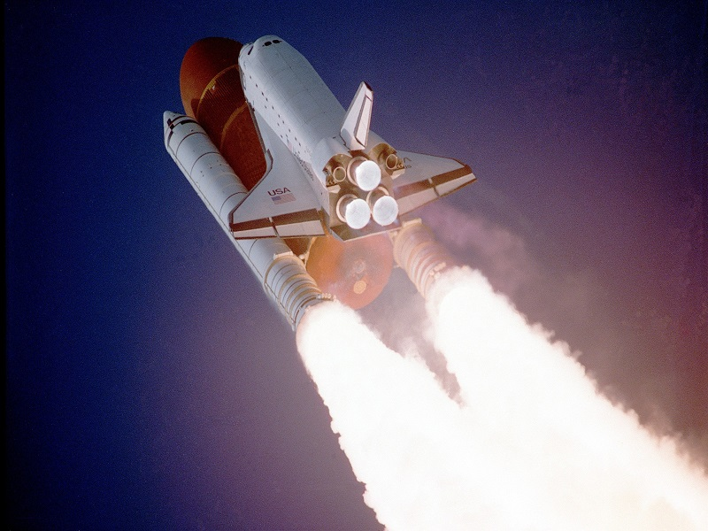
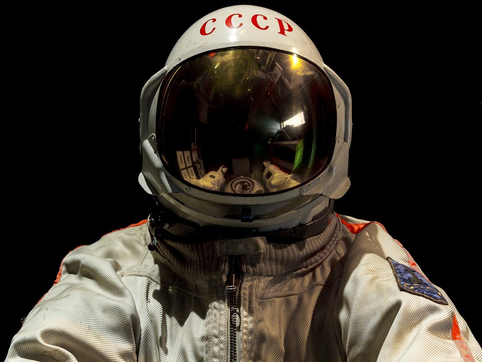
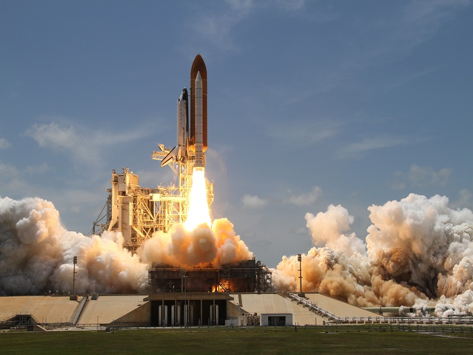
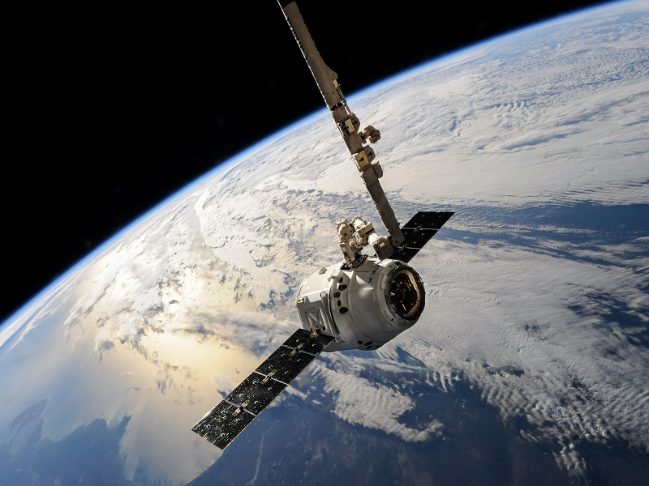
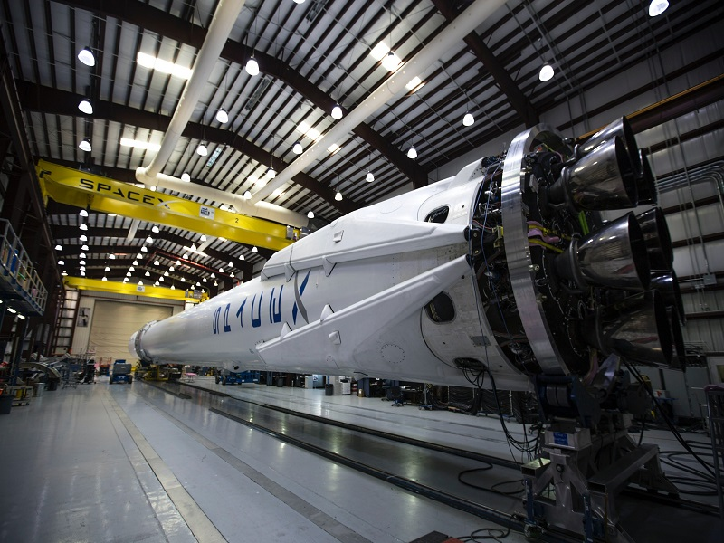
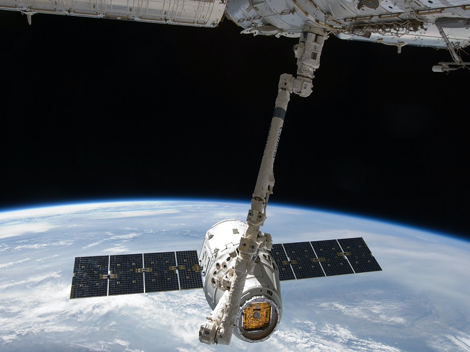

Az űrrepülés
Az űrrepülés egyfajta ballisztikus repülés, melynek során a felbocsátott eszköz eléri a világűrt. Az űrrepülés történhet az űreszköz belsejében lévő emberekkel, vagy emberek nélkül. Az előbbit „emberes űrrepülésnek” nevezzük. Az ember nélküli űrrepülésekhez tartoznak a felbocsátott műholdak (más néven űrszondák).
Az űrrepülés célja lehet tudományos (pl. csillagászati, mezőgazdasági), katonai (felderítő műholdak), kereskedelmi (pl. kommunikációs műholdak, űrturizmus).
Az űrrepülés fázisai

Felbocsátás
A felbocsátás (használatos még a pongyola „fellövés, kilövés” kifejezés is) rendszerint erre a célra szolgáló, ún. űrrepülőtéren történik, ami a függőleges felbocsátáshoz speciális állvánnyal, üzemanyagtöltési lehetőséggel és a műszerek ellenőrzését végző irányítóközponttal, továbbá a szárazföldi leszállást lehetővé tevő, a repülőtereknél megszokott kifutópályánál hosszabb kifutópályával rendelkezik a nagyobb leszállási sebesség miatt.

Pályára állás
A világűr elérésének tekintik a 100 km-es magasságú pálya elérését (ez az ún. Kármán-vonal). Az ennél valamivel kisebb magasságot elért repüléseket űrugrásnak nevezzük (rendszerint 40–80 km között).

A pálya elhagyása
Szigorú értelemben a világűrben lévő minden test valamilyen pályán halad. A pálya elhagyásán azt a folyamatot értjük, amikor a test egy korábbi pályáról másik pályára tér át.

Visszatérés a légkörbe
A világűrben mozgó test nagy mozgási energiával rendelkezik. Ezt az energiát le kell adnia a testnek a biztonságos földetérés előtt. Erre a célra az űreszköz hőpajzsot alkalmaz, olyan pályán kell belépnie a légkörbe és olyan manővereket kell végeznie az ereszkedés során, ami az energia nagy részének szétsugárzását eredményezi.

Égi mechanika
A világűrben haladó test mozgását az égi mechanika írja le. Mozgását a közeli gravitációs terek (jellemzően a Nap, a bolygók és a nagyobb holdak), illetve az űreszköz hajtóművének alkalmazása határozza meg. A pálya gondos tervezésével, a gravitációs terek hatásának figyelembe vételével (lásd: hintamanőver) a felhasználandó üzemanyag mennyisége jelentősen csökkenthető, illetve az űreszköz adott helyre adott időben való érkezése előre kiszámítható.
További információk a SpaceX

Földetérés
Az amerikai Mercury, Gemini és Apollo űrhajókat úgy tervezték meg, hogy nem a szárazföldre, hanem tengerben „érjenek földet”. Ennek előnye, hogy a leszálláshoz nem kellenek fékezőrakéták, amik csökkentenék az űrhajó sebességét (így az össztömeg kisebb lehet).